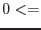

| Parameter | Mand | Type | Default | Constraints |
| ratethreshold | yes | real | 0.008 | ratethreshold |
The threshold of the rate, where the pixels having the rate larger than this value are regarded as `bad'.
|
| eventset | no | dataset | | |
Name of the input event list dataset used to construct the mask image. This parameter is read if inputstyle=`evlist'.
|
| maskset | no | dataset | ootemask.ds | |
The name of the output mask image in sky coordinates is written to this file name. If outputstyle=`raw', the output mask cube image in chip coordinates is written to this file name.
|
| outputstyle | no | string | sky | sky|raw |
If `sky', the OOTE map is output in sky coordinates, to the file referred to by parameter ooteimageset. In this case a template set (templateset) is needed and the attstyle parameter is also read. If outputstyle=`raw' on the other hand the output is written to a cube (in the expcubeset format) to the file pointed to by ootecubeset.
|
| templateset | yes | dataset | | |
This parameter is read if outputstyle=`sky'. This file should contain an image in the primary extension, which is used to define the pixel dimensions and World Coordinates of the output image.
|
| attstyle | no | string | binnedset | binnedset|template |
This parameter is read if outputstyle=`sky'. To convert from chip to sky coordinates it is necessary to know the spacecraft attitude. However the attitude is never completely stable and may vary significantly during an exposure. In this case the net sky image must be a mosaic of components from different values of the attitude. A time series of attitude values (such as that made either by attbin
or evproject) can be supplied to parameter binnedattset if attstyle is set to `binnedset' (default). If it is judged that the attitude wander during the exposure does not exceed some small fraction of the image pixel dimensions, or if the binned attitude set is not available, then the user may choose to set attstyle to `template' instead. In this case a single fixed value of attitude is read from *_PNT keywords in the template image header.
|
| binnedattset | yes | dataset | | |
If attstyle=`binnedset' the user should supply to the present parameter the name of a dataset which contains a time series of the spacecraft attitude variation during the exposure. The user should be aware of the fact that if an attitude (time) bin (specified in this file) is too small, the time bin is unlikely to be processed (see the description of avcnttoprocess below). Therefore it is recommended to create the binnedattset, allowing a relatively large attitude fluctuation, such as 1 arcsec, so that attitude bins are not too finely split.
|
| avcnttoprocess | no | real | 7.0 | ratethreshold |
When attstyle=`binnedset', the supplied binnedattset file may provide time durations with very short exposures. In that case if a pixel happens to have an event during the short duration, the value of count per frame at that pixel in that duration is large and likely exceeds the threshold ratethreshold, and as a result that pixel will be masked as piled-up just because the pixel has one event at a wrong time. To avoid this from happening, any time duration with too short exposure should not be processed. This parameter gives the threshold for it, i.e., only when there are reasonable number of frames in the time duration, in which the averaged count, corresponding to the piled-up threshold, exceeds this parameter avcnttoprocess, the time duration is processed to calculate the output mask. For example, if ratethreshold=0.008 and avcnttoprocess=7.0, each time duration should have the (maximum) number of frames larger than 875 (=7/0.008) so as to be used by the process, which corresponds to  2.3 ks for the standard mode in MOSs. Note that because the single-event ratio at 12 keV in MOSs is 0.23 (0.54 for pn), avcnttoprocess=7.0 corresponds to just above 2 count per frame per pixel in MOSs for very high energy photons, after the grade-branching ratio is corrected. 2.3 ks for the standard mode in MOSs. Note that because the single-event ratio at 12 keV in MOSs is 0.23 (0.54 for pn), avcnttoprocess=7.0 corresponds to just above 2 count per frame per pixel in MOSs for very high energy photons, after the grade-branching ratio is corrected.
|
| withrateimage | no | boolean | no | yes|no |
If this is true, the rate imagesets calculated are also output with the filename of ratesetroot followed by an attitude sequence number in the form of ``%04d'' with the suffix of .ds . If outputstyle=`sky', the rate image set is in sky coordinates, whereas if outputstyle=`raw', the rate set is the cube format in chip coordinates. Note that the rate is corrected for the event at the energy of 1.49 keV.
|
| ratesetroot | no | dataset | rateset | |
This is read only if withrateimage=true. See the section of withrateimage for detail.
|
| withpileupmask | no | boolean | no | yes|no |
If this is true, the pileup mask imagesets calculated are also output with the filename of pileupmasksetroot followed by an attitude sequence number in the form of ``%04d'' with the suffix of .ds .
|
| pileupmasksetroot | no | dataset | pileupmask | |
This is read only if withpileupmask=true. See the section of withpileupmask for detail.
|
| foroote | no | boolean | yes | yes|no |
If true, the out-of-time (OOT) events due to piled-up pixels are masked in the output.
|
| forrgaspike | no | boolean | no | yes|no |
If true, the RGA spikes due to piled-up pixels are masked in the output.
|
| isinverted | no | boolean | yes | yes|no |
If true, the bad pixels (namely affected by pile-up) in the output mask file are zero, if not, one.
For the later use of the output mask file with dpssflag, isinverted=yes is more convenient (default).
|
| withapproxpatfrac | no | boolean | yes | yes|no |
True if the approximate form of the pattern fraction parameters is used.
|
| withboresightfudge | no | boolean | yes | yes|no |
Flip the sign of the boresight euler%psi. This parameter will be removed after the boresight is fixed.
|
| Parameter | Mand | Type | Default | Constraints |